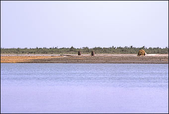

GeographyThe people of ancient India lived in a land of extremes. The terrain was varied and often presented great challenges. Occasional extremes of weather such as droughts and monsoons were also part of life in this land. However, great civilizations developed and flourished amidst the rivers, mountains, plains and deserts of the subcontinent. 
The Indus River near Mohenjo-daro Many rivers also flowed through ancient India making the land fertile. One of the main rivers to be used in ancient times was the Indus river in the north-west (what is now north-western India and Pakistan). It was on the banks of the Indus river that the earliest civilization in India to use writing, build large buildings and organise cities flourished for nearly one thousand years. Another important river in ancient India was the Ganga. Settlements, cities and towns developed on the banks of this powerful river from as early as prehistoric times.
| ||||||||